-

jCompiler (Front-End)
lexing and parsing an arbitrary input given a grammar
2021-2022 · OCaml, Java
-
Green Maps
reducing vehicle emissions through smarter navigation
2022 · Dart
-

Maths Art
generating fractals and artistic designs using maths
2016 onwards · JS, Python
-
Sentiment Classifier
exploring various methods to interpret the emotion of reviews
2021 · Java
-
Hexad
reaching for high scores by constructing hexagons
2017-2019 · C#, UnityScript
-
Pandemic Analysis
simulating a pandemic and analysing real Covid data
2020-2021 · Python